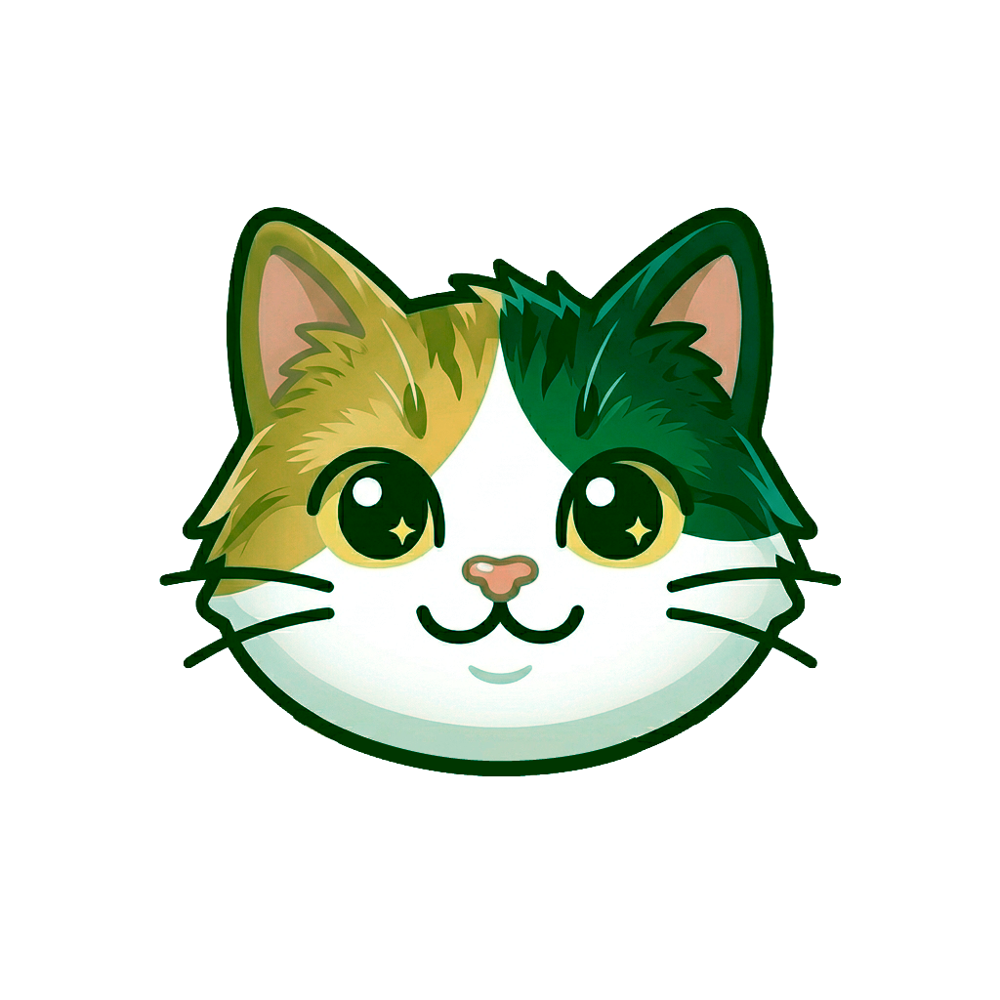
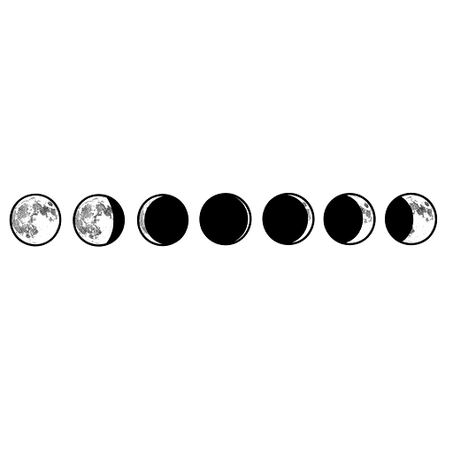

The branches are not two verdicts, they are two inks off the same 1950s press. Identical stock, identical key plate, identical cream letter chip — the only thing that changes between A and B is the ink laid down. Blue-and-ochre is a real two-colour schoolbook job, and no printer ever meant one plate as "correct".
Blue and ochre have no verdict grammar. Stop/go, tick/cross, marked-up-in-red — every one of those conventions is built on red against green, so removing both hues removes the whole reflex; what is left is a hue difference some 164° wide that the eye reads as elsewhere, not as better.
And the two are made deliberately equal in rank. They share the cream stock, the graphite key plate and an identical cream letter chip, they sit at the same size on the same ledge, and neither is the gold of the ordinary "next" ticket — so nothing marks either one as the default you were already heading for.
| Candidate pair | ΔE00 deutan | protan |
|---|---|---|
| 4.6 | 6.2 | |
| 8.0 | 6.3 | |
| 13.7 | 9.3 | |
| 43.4 | 42.9 |
Every warm ink that is not red is some kind of yellow. That is not a preference — it is what is left once red and green are removed, and it is why the pair had to end up blue against ochre.
| Role | Hex | WCAG vs #F4EAD5 |
|---|---|---|
| #2B4C7E | 7.21 : 1 PASS AAA | |
| #7A5E22 | 5.09 : 1 PASS AA | |
| #4D4740 | 7.67 : 1 PASS AAA | |
| #B24F35 | 4.33 : 1 FAILS AA |
| Vision | A becomes | B becomes | ΔE00 |
|---|---|---|---|
| Normal | 41.8 | ||
| Deuteranopia | 43.4 | ||
| Protanopia | 42.9 | ||
| Tritanopia | 39.3 | ||
| was: brick/teal, protan | 16.9 |


Tuwing lunar eclipse, namumula ang buwan! Sinasala ng atmospera ng Earth ang ibang kulay at tinatapat lang ang pulang liwanag ng Araw sa buwan.
01 Normal na paninginA #2B4C7E · B #7A5E22 · banner #4D4740
Tuwing lunar eclipse, namumula ang buwan! Sinasala ng atmospera ng Earth ang ibang kulay at tinatapat lang ang pulang liwanag ng Araw sa buwan.
02 DeuteranopiaA #2A4C7E · B #726221 · ΔE00 43.4
Tuwing lunar eclipse, namumula ang buwan! Sinasala ng atmospera ng Earth ang ibang kulay at tinatapat lang ang pulang liwanag ng Araw sa buwan.
03 ProtanopiaA #2A4C7E · B #6E6022 · ΔE00 42.9
Tuwing lunar eclipse, namumula ang buwan! Sinasala ng atmospera ng Earth ang ibang kulay at tinatapat lang ang pulang liwanag ng Araw sa buwan.
04 TritanopiaA #185262 · B #7F585C · ΔE00 39.3
lin · n, apply that plane's 3×3, back to sRGB. Sanity-checked against
the textbook cases (pure red → #A48B00 under deutan, pure blue →
#006087 under tritan). Distances are CIEDE2000 in CIELAB/D65.
The three simulated hexes are pasted in as solid colours on four separate frames —
there is no CSS filter anywhere in this file, so the cream stock, the peach mat
and the engraving render identically in all four and the only thing you are comparing is
the ink.#6B5F36 vs #5F5F60).
Blue-vs-yellow is the one axis that survives all three deficiencies, which is exactly why
the pair is built on it.backgroundColor / borderColor, so the port is free.